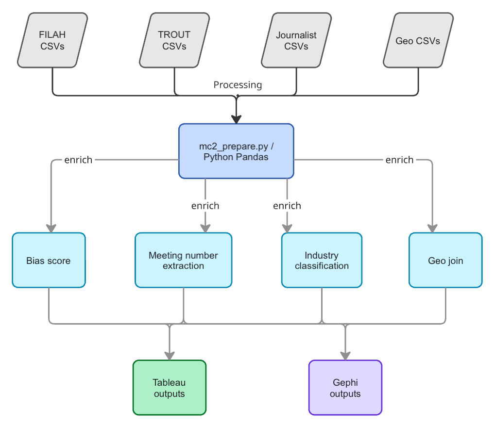
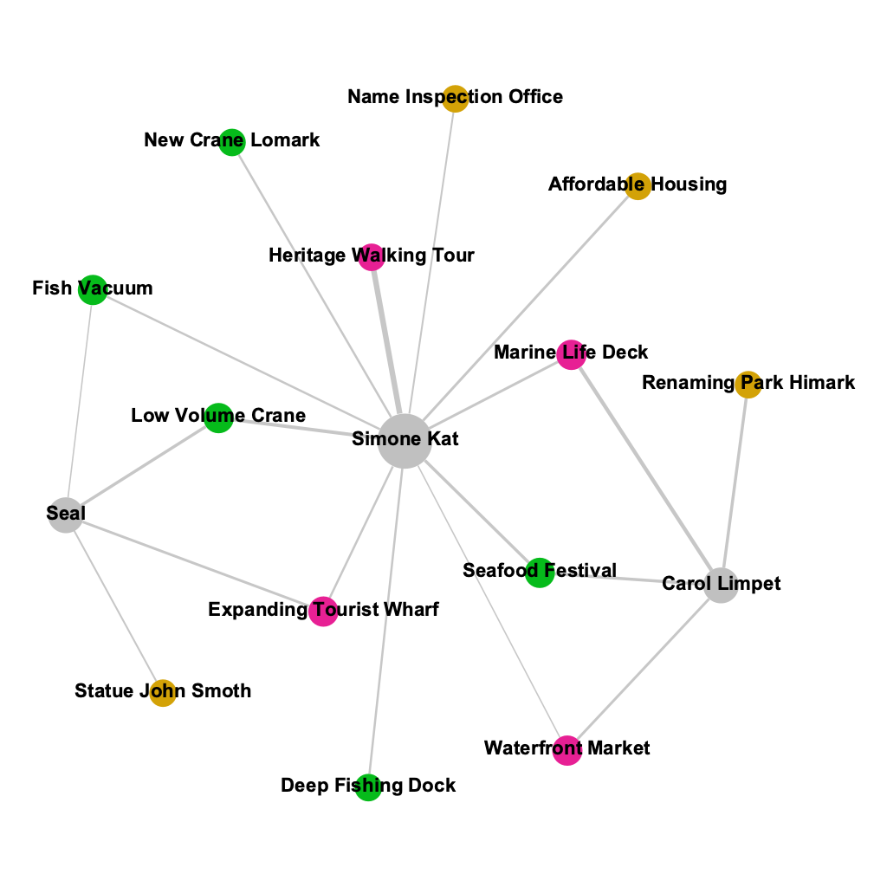
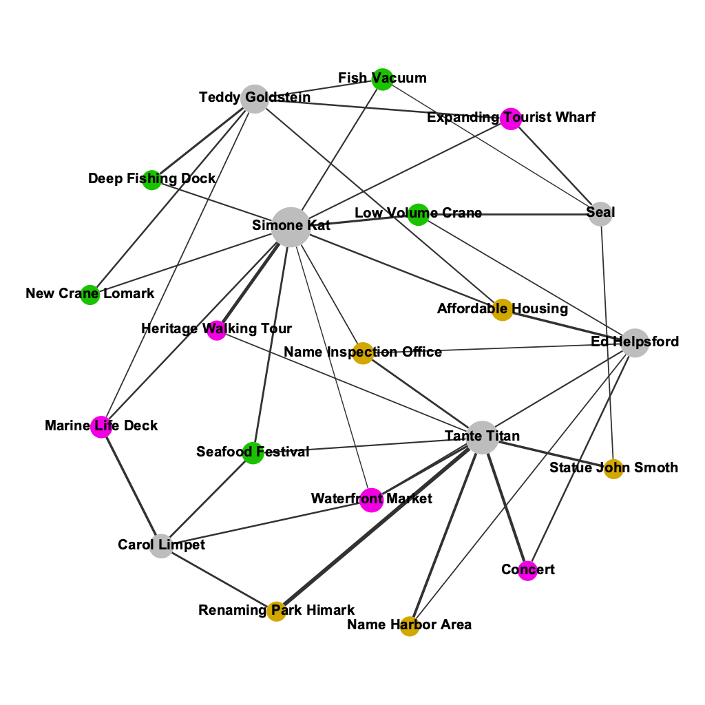
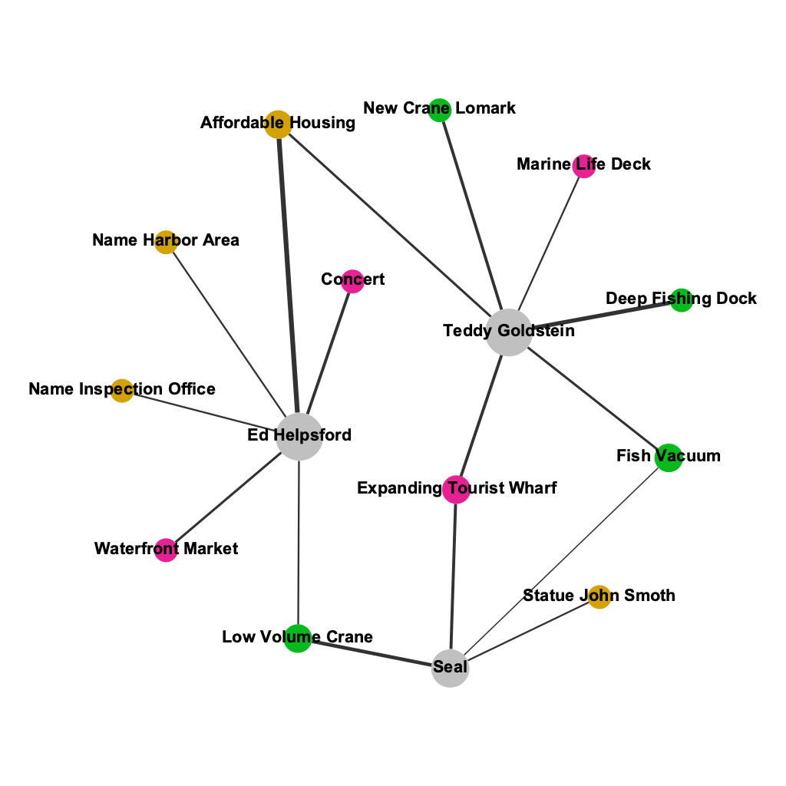

Data Transformation
From raw knowledge graph CSVs to Tableau-ready flat tables
Overview
The MC2 VAST Challenge 2025 dataset is structured as a knowledge graph: nodes represent entities (members, discussions, plans, travel destinations) and links represent relationships (participant, about, part_of, travel). Raw data arrived as six CSV pairs — one nodes file and one links file per dataset (FILAH, TROUT, Journalist).
The preparation script mc2_prepare.py (v3) cleans, enriches, and transforms these into flat tables suitable for Tableau and Gephi. All outputs are written to ./tableau_data/.
Input Files
| File | Description |
|---|---|
mc2_FILAH_nodes.csv |
All nodes recorded by the fishing lobby |
mc2_FILAH_links.csv |
All relationships recorded by the fishing lobby |
mc2_TROUT_nodes.csv |
All nodes recorded by the tourism lobby |
mc2_TROUT_links.csv |
All relationships recorded by the tourism lobby |
mc2_jounalist_nodes.csv |
Full journalist record — nodes |
mc2_journalist_links.csv |
Full journalist record — links |
mc2_geo_nodes.csv |
Geographic place nodes with lat/lon coordinates |
mc2_geo_edges.csv |
Geographic connectivity edges |
Topic–Industry Classification
Fifteen discussion topics were manually classified into three industry categories. This lookup table drives all industry-level aggregations.
5 Fishing topics: Fish Vacuum, Deep Fishing Dock, Low Volume Crane, Seafood Festival, New Crane Lomark
5 Tourism topics: Expanding Tourist Wharf, Marine Life Deck, Heritage Walking Tour, Waterfront Market, Concert
5 Neutral topics: Affordable Housing, Renaming Park Himark, Name Harbor Area, Name Inspection Office, Statue John Smoth
Key Design Decisions
Graph Traversal for Topic Assignment
The primary method for assigning industry to a discussion is graph traversal via about links:
discussion/plan → about → topic_node_id → industryString inference from node IDs is used only as a fallback for nodes with no about link. This corrects a bug in earlier versions where topic classification relied entirely on substring matching in IDs.
Meeting Number Extraction
Meeting numbers are extracted from part_of links, where source = Meeting_N and target = discussion/plan. This replaces the earlier regex approach, which was error-prone for edge cases.
Bias Score Formula
Bias_Score = (tourism_participations − fishing_participations) / total_participations- Positive = tourism-leaning
- Negative = fishing-leaning
- Threshold: |score| > 0.15 = directional; within ±0.15 = balanced
Output Files
| File | Rows (approx) | Purpose |
|---|---|---|
mc2_nodes_master.csv |
~3,000 | All nodes, all datasets, enriched |
mc2_links_master.csv |
~5,000 | All edges, all datasets, enriched |
mc2_member_sentiment.csv |
~500 | One row per member × discussion × dataset |
mc2_member_activity.csv |
18 | Bias scores per member per dataset |
mc2_member_topic_agg.csv |
~250 | Member × topic × dataset aggregated |
mc2_cross_dataset_comparison.csv |
~80 | Wide pivot for slope/bump charts |
mc2_member_attendance.csv |
288 | Member × meeting × dataset attendance grid |
mc2_travel_geo.csv |
~120 | Travel plans with lat/lon coordinates |
mc2_coverage_comparison.csv |
~200 | Which discussions appear in which datasets |
mc2_industry_breakdown.csv |
9 | Industry share % per dataset |
mc2_gephi_[f/t/j]_nodes.csv |
varies | Bipartite network node files |
mc2_gephi_[f/t/j]_edges.csv |
varies | Bipartite network edge files |
mc2_topic_industry.csv |
15 | Topic → industry lookup |
Data Pipeline Diagram

End-to-end pipeline: raw CSVs → graph traversal → enriched flat tables → Tableau / Gephi
Bug Fixes (v1 → v3)
| Bug | Symptom | Fix |
|---|---|---|
| BUG A | mc2_travel_geo.csv lat/lon always null |
Correct join chain: plan → travel link → geo_node → coordinates |
| BUG B | mc2_travel_geo.csv Is_Member always False |
Member found via participant links (source=plan_id, target=member) |
| BUG C | Non-member orgs leaking into counts | Explicit MEMBERS whitelist with assertion guard |
| BUG D | Industry inferred from node ID string | Primary: graph traversal (about link); string inference as fallback only |
| BUG E | NaN Member rows in travel geo | Drop rows where Member is NaN — cross-dataset participant mismatch |
| BUG F | Goldstein missing deep_fishing_dock topic |
Changed inner join to left merge in cross-dataset comparison |
Running the Script
python3 mc2_prepare.pyOutputs are written to ./tableau_data/. The script prints row counts and a summary report on completion.
Gephi Network Files
For Finding 2, bipartite member–topic network graphs were built in Gephi using:
- Nodes: 6 COOTEFOO members + 15 topic nodes
- Edges: Weighted by participation count; colour-coded by industry
- Layout: Fruchterman Reingold
Three separate network graphs were produced — one per dataset (FILAH, TROUT, Journalist) — to make the structural differences in what each lobby chose to record visually apparent.



Three Gephi bipartite networks side-by-side: FILAH (left), Journalist (centre), TROUT (right)